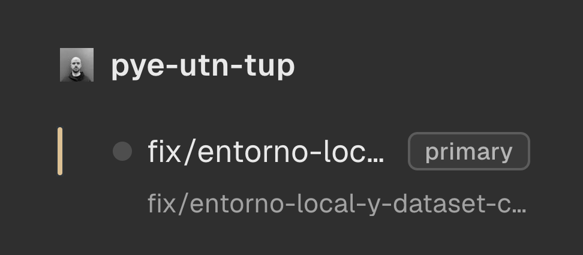
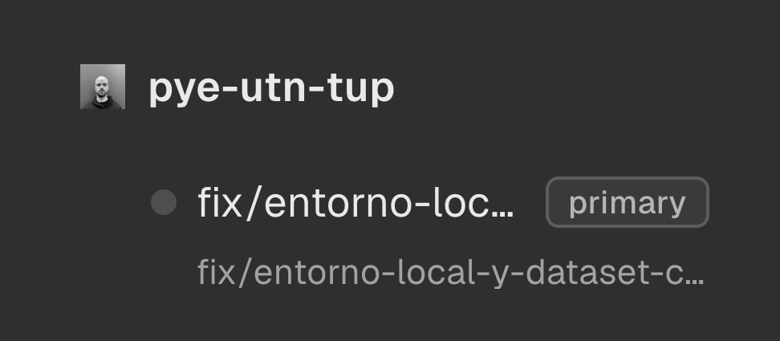
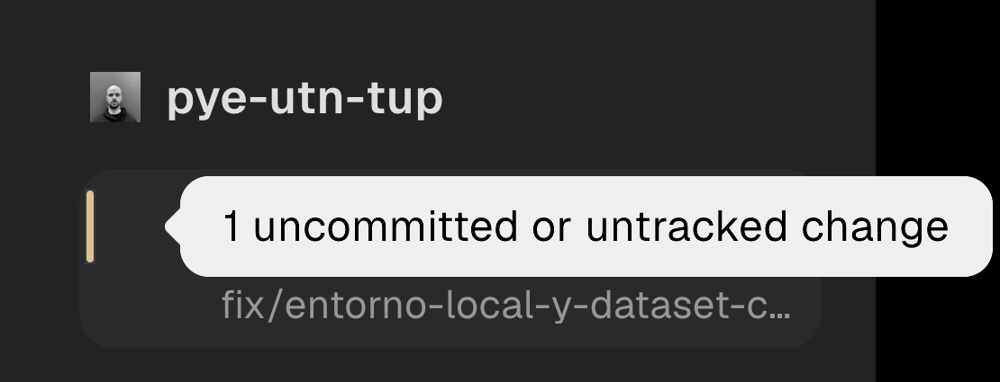

Orca · an open source contribution
Sometimes the bigger contribution isn't a tool of your own. It's one detail in someone else's.

Luciano Balbiano01 / 06
01 — The problem
Orca runs coding agents side by side, each one in its own git worktree, and each worktree is a card in the sidebar.
With many of them open, every card looked the same whether its checkout was clean or not. The only way to know was to open them one by one.

Orca · stablyai02 / 06
02 — The change
Orca · stablyai03 / 06
03 — On hover
Hover the stripe and it tells you how many files changed. Past git's listing limit it says "N+" instead of guessing. Clean cards show nothing, and so do the ones not read yet.

Orca · stablyai04 / 06
04 — What you don't see
Showing a line is easy. Knowing when to draw it, without putting git to work on every checkout, is the change.
Live test · new file: stripe in 17 s · deleted: gone in 74 s
Orca · stablyai05 / 06
05 — Where it stands
First the issue, with the before and a mockup. Then the pull request, with tests, before and after captures, and the project's own checks.
Orca is open source, with close to 108,000 stars on GitHub. The pull request, the issue and the project are in the first comment.
github.com/BalbianoLuciano06 / 06